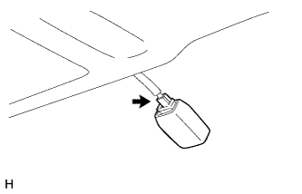

WINDSHIELD GLASS > REMOVAL |
| 1. DISCONNECT CABLE FROM NEGATIVE BATTERY TERMINAL |
| Condition | Waiting Time |
| Vehicle enrolled in G-BOOK system | 6 minutes |
| Vehicle not enrolled in G-BOOK system | 1 minute |
| 2. REMOVE UPPER RADIATOR SUPPORT SEAL |
 |
Remove the 13 clips and upper radiator support seal.
| 3. REMOVE ENGINE ROOM SIDE COVER LH |
 |
Detach the 4 clips and remove the engine room side cover.
| 4. REMOVE ENGINE ROOM COVER SIDE |
 |
Detach the 4 clips and remove the engine room side cover.
| 5. REMOVE FRONT FENDER SIDE PANEL PROTECTOR LH |
 |
Detach the 3 clips and guide, and remove the front fender side panel protector.
| 6. REMOVE FRONT FENDER SIDE PANEL PROTECTOR RH |
| 7. REMOVE FRONT FENDER TO COWL SIDE SEAL LH |
 |
Detach the 5 claws and remove the front fender to cowl side seal LH.
| 8. REMOVE FRONT FENDER TO COWL SIDE SEAL RH |
| 9. REMOVE FRONT WIPER ARM HEAD CAP |
Using a screwdriver, detach the 3 claws and remove the wiper arm head cap.
| *1 | Protective Tape |
| 10. REMOVE FRONT WIPER ARM AND BLADE ASSEMBLY LH |
 |
Remove the nut and front wiper arm and blade assembly LH.
| 11. REMOVE FRONT WIPER ARM AND BLADE ASSEMBLY RH |
 |
Remove the nut and front wiper arm and blade assembly RH.
| 12. REMOVE COWL TOP VENTILATOR LOUVER SUB-ASSEMBLY |
Remove the 2 clips.
Detach the 6 claws and guide (A).
Disengage the 10 guides (B) and pull out the cowl top ventilator louver sub-assembly.
| *1 | Guide A |
| *2 | Guide B |
| 13. REMOVE WINDSHIELD LOWER OUTSIDE MOULDING LH |
Remove the windshield outside moulding.
Put protective tape around the moulding.
Using a moulding remover, detach the 6 clips and remove the moulding.
| 14. REMOVE WINDSHIELD LOWER OUTSIDE MOULDING RH |
| 15. REMOVE NO. 1 WINDSHIELD OUTSIDE MOULDING CLIP |
Remove the 5 No. 1 windshield moulding clips.
| 16. REMOVE NO. 3 WINDSHIELD OUTSIDE MOULDING CLIP |
Put a 5 mm (0.157 in.) drill bit into a drill.
Wind tape around the drill bit approximately 5 mm (0.197 in.) from the tip of the drill.
Lightly press the drill against the No. 3 windshield outside moulding clips, drill off the flanges of the No. 3 windshield outside moulding clips, and remove them.
Using a vacuum cleaner, remove the No. 3 windshield outside moulding clip fragments and shavings from the drilled areas.
| 17. REMOVE DOOR SCUFF PLATE ASSEMBLY LH |
Put protective tape around the door scuff plate.
| *1 | Protective Tape |
Using a screwdriver, detach the 4 clips, 10 claws and 2 guides.
Disconnect the connector and remove the door scuff plate.
| 18. REMOVE DOOR SCUFF PLATE ASSEMBLY RH |
| 19. REMOVE COWL SIDE TRIM BOARD LH |
 |
Remove the clip.
Detach the clip and claw and remove the cowl side trim board.
| 20. REMOVE COWL SIDE TRIM BOARD RH |
| 21. REMOVE FRONT DOOR OPENING TRIM WEATHERSTRIP LH |
 |
Remove the front door opening trim weatherstrip.
| 22. REMOVE FRONT DOOR OPENING TRIM WEATHERSTRIP RH |
| 23. REMOVE FRONT NO. 1 ASSIST GRIP PLUG LH |
 |
Using a screwdriver, detach the 2 claws and remove the front No. 1 assist grip plug.
| *1 | Protective Tape |
| 24. REMOVE FRONT NO. 1 ASSIST GRIP PLUG RH |
| 25. REMOVE NO. 1 ASSIST GRIP |
 |
Remove the 2 bolts.
Detach the 2 claws and remove the No. 1 assist grip.
| 26. REMOVE FRONT PILLAR GARNISH LH |
 |
Detach the 3 guides and remove the front pillar garnish.
 |
Protect the curtain shield airbag assembly.
Completely cover the airbag with a cloth or nylon sheet and secure the ends of the cover with adhesive tape as shown in the illustration.
| *1 | Curtain Shield Airbag Assembly |
| *2 | Adhesive Tape |
| *3 | Protective Cover |
| 27. REMOVE FRONT PILLAR GARNISH RH |
| 28. REMOVE VISOR BRACKET COVER |
 |
Detach the 4 claws and remove the visor bracket cover.
| 29. REMOVE VISOR ASSEMBLY LH |
Remove the 2 screws and visor.
| 30. REMOVE VISOR ASSEMBLY RH |
| 31. REMOVE VISOR HOLDER |
Turn the visor holder approximately 45° and pull it out as shown in the illustration.
Detach the 2 claws and remove the visor holder.
| 32. REMOVE MAP LIGHT ASSEMBLY |
 |
Detach the 4 clips.
Disconnect the connector and remove the map light.
| 33. REMOVE RAIN SENSOR COVER |
 |
Detach the 2 claws and remove the rain sensor cover.
| 34. REMOVE RAIN SENSOR |
|  |
Disconnect the connector.
 |
Release the stopper by pulling it down.
| *1 | Stopper |
Remove the rain sensor as shown in the illustration.
| 35. REMOVE INNER REAR VIEW MIRROR STAY HOLDER COVER |
 |
Detach the 2 claws and slide the inner rear view mirror stay holder cover as shown in the illustration.
 |
Detach the 2 claws and remove the inner rear view mirror stay holder cover.
| 36. REMOVE INNER REAR VIEW MIRROR ASSEMBLY |
 |
Disconnect the connector.
Using a T20 "TORX" socket wrench, remove the screw and inner rear view mirror.
| 37. REMOVE ROOF HEADLINING ASSEMBLY |
Partially remove the roof headlining.
| 38. REMOVE WINDSHIELD GLASS |
| *A | for 1-piece Type | *B | for 2-piece Type |
| *1 | No. 1 Windshield Glass Stopper | *2 | No. 2 Windshield Glass Stopper |
Apply protective tape to the outer surface of the vehicle body to prevent scratches.
| *1 | Protective Tape |
From the interior, insert a piano wire between the vehicle body and glass as shown in the illustration.
Tie objects that can serve as handles (for example, wooden blocks) to both wire ends.
| *1 | Plastic Sheet |
| *2 | Piano Wire |
| *3 | Wooden Blocks |
| *4 | Protective Tape |
| *5 | Stopper |
Place matchmarks over the glass and vehicle body at the locations indicated in the illustration.
| *a | Matchmark |
w/ Windshield Deicer System:
Disconnect the windshield deicer connector.
Cut through the adhesive by pulling the piano wire around the glass.
Disconnect the stoppers.
Using suction cups, remove the glass.
| 39. REMOVE WINDSHIELD GLASS ADHESIVE DAM |
Using a scraper, remove the adhesive dam.
| 40. REMOVE WINDSHIELD OUTSIDE MOULDING |
Using a scraper, remove the moulding.
| 41. REMOVE NO. 2 WINDSHIELD GLASS STOPPER |
Using a scraper, remove the 2 stoppers.
| 42. REMOVE NO. 1 WINDSHIELD GLASS STOPPER (for 2-piece Type) |
 |
Remove the 2 No. 1 stoppers.
| 43. CLEAN WINDSHIELD GLASS |
 |
Using a scraper, remove the damaged stoppers, dam and adhesive sticking to the glass.
Clean the outer circumference of the glass with non-residue solvent.
| 44. CLEAN VEHICLE BODY |
 |
Clean and shape the contact surface of the vehicle body.
On the contact surface of the vehicle body, use a knife to cut away excess adhesive as shown in the illustration.
Clean the contact surface of the vehicle body with cleaner.
| *1 | Adhesive |
| *2 | Vehicle Body |